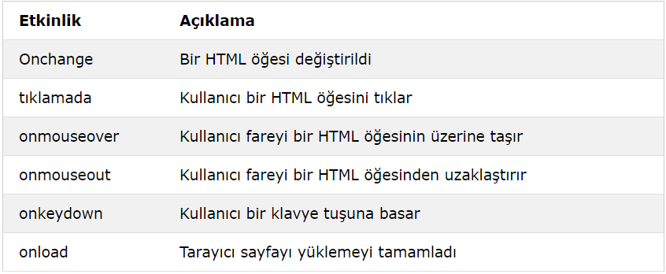

JavaScript Olayları
HTML olayları, HTML öğelerinde meydana gelen "şeyler" dir .
HTML sayfalarında JavaScript kullanıldığında, JavaScript bu olaylara "tepki verebilir" .
HTML Etkinlikleri
HTML etkinliği, tarayıcının yaptığı veya kullanıcının yaptığı bir şey olabilir.
Bir HTML web sayfasının yüklenmesi tamamlandı
Bir HTML giriş alanı değiştirildi
Bir HTML düğmesi tıklandı
JavaScript ne yapabilir?
Olay işleyicileri, kullanıcı girdisini, kullanıcı eylemlerini ve tarayıcı eylemlerini işlemek ve doğrulamak için kullanılabilir:
Bir sayfa her yüklendiğinde yapılması gerekenler
Sayfa kapalıyken yapılması gerekenler
Kullanıcı bir düğmeyi tıkladığında gerçekleştirilmesi gereken eylem
Bir kullanıcı veri girdiğinde doğrulanması gereken içerik
JavaScript'in etkinliklerle çalışmasına izin vermek için birçok farklı yöntem kullanılabilir:
HTML olay özellikleri doğrudan JavaScript kodunu yürütebilir
HTML olay özellikleri JavaScript işlevlerini çağırabilir
HTML öğelerine kendi olay işleyici işlevlerinizi atayabilirsiniz
Etkinliklerin gönderilmesini veya işlenmesini engelleyebilirsiniz
Ortak HTML Etkinlikleri
